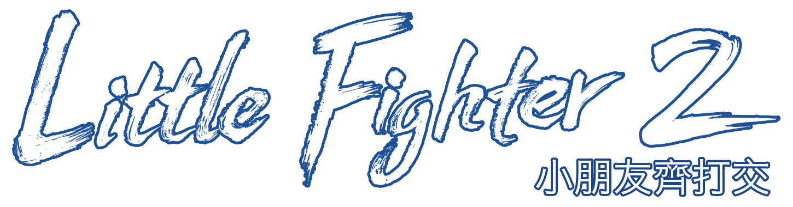

(In BETA) Easy and convenient. Play with friends or match with anyone via Steam Network.
(早期測試中) 簡單、方便。可與朋友遊玩，或透過Steam連線系统與任何玩家對戰。
Advanced option. Requires an IP and possibly port forwarding. Friends only (no stranger matchmaking).
進階且較複雜。需要 IP 位址，可能還要設定連接埠轉送。僅限與朋友遊玩（無法與陌生人配對）。
[?] More Info 更多資訊
1. Steam Network (BETA): The easiest option for most players. No setup or technical skills needed. Click "Join" to enter a lobby, or "Create Lobby" to host and let others in.
2. Private Server: If you're playing with people nearby (e.g., on the same Wi-Fi), a private server is usually faster and more stable. However, setting up a private server is more advanced and requires some technical knowledge, such as finding your private or public IP address. If you're connecting over the internet (using a public IP), you'll also need to know how to set up port forwarding. Note: A private server over the internet (using a public IP) only works if your IP address is routable. Therefore, it will not function if your ISP uses CGNAT (Carrier-Grade NAT), DS-Lite (Dual-Stack Lite), or similar technologies. (Private servers for local IP connections only are not affected by this limitation.)
Starting a private server will run a host program with 8 rooms. Each room supports up to 8 connected devices.
Well.. if any of this sounds confusing, you should probably use "Steam Network" for network play.
Cross-Platform Compatibility and Versioning: In network mode, Mac and Windows players can connect and play together. However, all players must use the same version of the game. If you join a room using a different version, you will be automatically kicked out.
Why LF2 network play is tricky to implement: LF2’s design makes online play more challenging than many genres. For details, see: [An article about LF2 network play]
2. 私有伺服器：若你與其他玩家距離很近（例如在同一個 Wi-Fi 網路），使用私有伺服器通常會更快更穩定。但建立私有伺服器屬於進階操作，玩家需要具備一些技術知識，例如如何查找自己的 Local 或 Public IP 位址。若要透過網際網路連線（使用 Public IP），還需要知道如何設定端口轉發（Port Forwarding）。 注意： 私有伺服器若要透過 Public IP 連線，必須使用可被路由（routable）的 Public IP 位址。因此，若你的 ISP 使用 CGNAT（營運商級 NAT）、DS-Lite（雙協議棧輕量化）或其他類似技術，則將無法運作。（僅用於 Local IP 連線的私有伺服器不受此限制。）
啟動私有伺服器後，將執行一個包含 8 個房間的伺服程式。每個房間最多可容納 8 機連線。
如果以上內容讓你覺得困惑難懂，建議使用 「Steam 連線系统」進行連線遊玩。
跨平台相容性與版本一致性：在連線模式中，Mac 和 Windows 玩家可以互相連線並正常遊玩。不過，所有玩家必須使用相同版本的遊戲。如果你加入的是不同版本的房間，將會被踢出。
A lobby is a temporary room used for waiting for other players to join. Once the game starts, the lobby is delisted.
Click “Create Lobby” to host and let others join. If you want only friends to join, set a password.
If you want to join someone else’s lobby, click "Join an Existing Lobby" to see a list of lobbies worldwide.
Note: Game performance may drop significantly if any player has a poor connection to others. For the best experience, try playing with people from the same country or region.
Click “Start a Private Server” to host and let others join. You’ll need to share your IP address with other players: use your local IP if they’re on the same network (for example, the same Wi-Fi), or your public IP if they’re connecting over the internet. After starting the server, you also need to join it to play; if the server runs on the same machine, enter "localhost" as the IP.
Click “Join an Existing Private Server” if someone else is hosting and has shared their IP address with you.
If you can’t start the server program (e.g., on Steam Deck or Linux), or you’re unsure what an IP address or port is, click "Back" and choose "Steam Matchmaking" for network play.
點選 「啟動私有伺服器」 來建立伺服器並讓其他玩家加入。你需要把自己的 IP 位址分享給其他玩家：若他們在同一個網路（例如同一個 Wi-Fi），請提供「本地IP」；若他們透過網際網路連線，請提供「公共IP」。啟動伺服器後，你也需要加入自己的伺服器才能遊玩；如果伺服器與你在同一台電腦上，IP 欄位可輸入 "localhost"。
如果是別人已建立伺服器並把 IP 位址提供給你，請點選 「加入私有伺服器」 來加入。 若無法啟動伺服器程式（例如在 Steam Deck 或 Linux 上），或不清楚 IP 位址或端口的意思，請點選「返回」並改選「Steam 連線系統」進行連線遊玩。

Connect to the room server 接通房間伺服器
connecting-header
connecting-text
███████
room-server-error-header
Room List from [IP_ADDRESS]
伺服器房間列表
You can join the room with a 'Vacant' or 'Pending' status that have fewer than 8 players. 您可以加入狀態為「空置」或「等待」且玩家數少於8人的房間。
Lobby List 大廳列表
Joining Password 加入密碼 (when needed 如需要):
room-lobby-header
Player List 玩家列表
Chat Room 聊天室
[?]
The lobby creator can start the game once there are at least 2 players (up to 8). Note: After the game starts, no new players can join. Only the lobby creator can adjust latency. Lag is more likely to occur if there are more than four players or if anyone has a poor connection. 當大廳有至少 2 名玩家（最多 8 名）時，廳主即可開始遊戲。注意：遊戲開始後將不再接受新玩家加入。只有廳主可調整延遲。若玩家超過四位或有任何人網路不佳，遊戲會更容易出現卡頓。
What is Connection Latency in LF2 Network Mode?
Connection latency refers to the time for the game to respond to an input keypress. It is measured in frames (this game runs at 30 frames per second). This latency serves as a time buffer for sending the keypress signal to connected computers. Low latency speeds up responses but can cause lags; high latency smooths gameplay but slows responses. Extreme levels of either can degrade the gaming experience.
Example Use Cases:
．Set it to 1~2 frame: 3 computers connected using the same Wi-Fi network (e.g., all computers in the same apartment, in the same student hostel, or in the same computer lab).
．3~4 frames: Similar to above, but with 8 computers connected, or the Wi-Fi signal is weak.
．5~6 frames: Connections within the same district/suburb using fiber optics from the same ISP.
．7~10 frames: Longer-distance connections (e.g., across suburbs, across ISPs) utilizing high-speed networks like 5G or fiber optic.
．More than 10 frames: Connection across states/provinces or across countries.
Actual number can be different according to connection quality and distance.
The game can be started when there are 2 or more players in the room. Please note that once the game has started, no new players will be able to join this room.
當房間內有2位或更多玩家時，便可以開始遊戲。請注意，一旦遊戲開始，將不再允許新玩家加入此房間。
What is Connection Latency in LF2 Network Mode?
Connection latency refers to the time for the game to respond to an input keypress. It is measured in frames (this game runs at 30 frames per second). This latency serves as a time buffer for sending the keypress signal to connected computers. Low latency speeds up responses but can cause lags; high latency smooths gameplay but slows responses. Extreme levels of either can degrade the gaming experience.
Example Use Cases:
．Set it to 1~2 frame: 3 computers connected using the same Wi-Fi network (e.g., all computers in the same apartment, in the same student hostel, or in the same computer lab).
．3~4 frames: Similar to above, but with 8 computers connected, or the Wi-Fi signal is weak.
．5~6 frames: Connections within the same district/suburb using fiber optics from the same ISP.
．7~10 frames: Longer-distance connections (e.g., across suburbs, across ISPs) utilizing high-speed networks like 5G or fiber optic.
．More than 10 frames: Connection across states/provinces or across countries.
Actual number can be different according to connection quality and distance.
This might be because the Steam client is not installed or is currently closed, or there is a network issue, or there's an error connecting to the Steam server. It's also possible (though less likely) that you don't own the game on your Steam account. Please check your network connection, make sure the Steam client is running and that you're logged in, then try again.